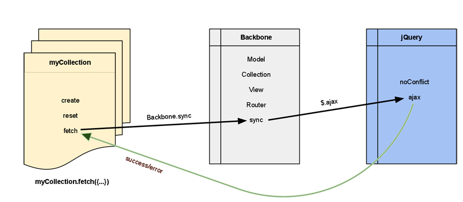

Section #8 - Real Time
Bocoup Backbone.js Training
Backbone.sync
The Backbone.sync method handles low-level persistence within Models and
Collections over a type of transport: HTTP, WebSockets, localStorage, etc.
This method is central to all persistence; which it achieves by AJAX to RESTfully designed services.
Backbone.sync is a global function within the Backbone namespace. It can be overwritten at this level or at the Class level.
The signature for Backbone.sync is:
Backbone.sync = function(method, model, options) {
};When Sync Is Called
It is called whenever you use the Model methods: fetch, save and destroy; it is also triggered when the Collection methods: fetch and create are called.
When calling fetch, the order of operations for sync typically look something like this:

Customize Sync
Overriding sync is central to any transport modification or customization to outgoing and incoming data. The sync method signature is:
The method argument is a mapping to the CRUD acronym, "create", "read",
"update" and "delete".
The model argument can actually be either a:
Backbone.ModelBackbone.Collection
This is crucial for determining if you are working with Models or Collections. A simple conditional check for Model or Collection:
if (model instanceof Backbone.Model) { ... }
When to Override Sync
If your transport may be used on multiple models, it makes more sense to augment the sync method at the global level.
Backbone.sync = function(method, model, options) {
// your implementation here
};But you can override it per Object
MyModel.sync = function(method, model, options) {};Saving a reference to Backbone.Sync
Note: its a good practice to save a reference to Backbone.sync in case you need it later.
Asynchronous Behavior
By default, the sync method is asynchronous. That is why it takes
a success and error callback.
Because it uses jQuery's ajax method by default, it also returns a Deferred.
When overwritting sync, make sure the above two are still true if you plan to use the chaining fetch model: fetch().then...:
Example:
Saving attributes
The model argument is the actual instance from the application. In order to persist only attributes, the toJSON method should be called. It may be easier to simply JSON.stringify the model attribute to get a String instead of an Object. Like so:
var data = JSON.stringify(model);The options argument typically contains only success and error handlers to be called by your sync implementation, but may contain any additional properties that can be passed via the Model and Collection CRUD methods.
Example Override: In Memory Implementation
What's with these websockets, eh?
HTTP
- Unidirectional - The client has to ask for the content, for the server to deliver it.
- Half-duplex - can do both up and down but one at a time.
- Costly - too many headers in each packet
- Polling - still high latency
- Long polling leaves request hanging on webserver, can timeout and can actually fire too many requests comparing with Polling.
Websockets
- Full-duplex
- bi-directional - client or server can send.
Socket.io - http://socket.io/
Picks the most suitable method of communication depending on browser capabilities.
Written in JavaScript for Node.js servers, but there are implementations in other languages as well.
Adding Socket.io to your client:
1 Include socket.io.js from your server:
<script src="http://localhost:4200/socket.io/socket.io.js"></script>
2 Initialize a connection on your application namespace:
// socket.io connection
app.socket = io.connect("ws://localhost:4200");Fallback
Socket.io will use the following transports and fallback in order:
- WebSocket
- Adobe® Flash® Socket
- AJAX long polling
- AJAX multipart streaming
- Forever Iframe
- JSONP Polling
Integration
Integrating into Backbone can be done in two different ways:
Override
Backbone.syncand make requests overSocket.io.Listen to events and update existing
ModelsorCollections.
A combination of the two can be used for applications that have
many concurrent users and persistence. The Backbone.sync
communication will persist to the server and an event is
dispatched to connected users updating their Models or Collections.
Server
To use Socket.io for persistence, the server must be able to respond to CRUD method calls. The following example illustrates how to set up a server to respond to "read" CRUD calls:
Patching
In the implementation below, Backbone.sync is overridden to provide persistence
to Models and Collections that have a realtime property:
Implementation
On the clientside, here is how one might use a realtime enabled model:
Push
In the previous example, we accomplished something Backbone already provides with AJAX.
In this example you will see how to respond to a server pushing data in real time.
Here the server has been configured to push out a new Model every second:
Push
The Backbone code to respond to the incoming "push" events could look something like this: